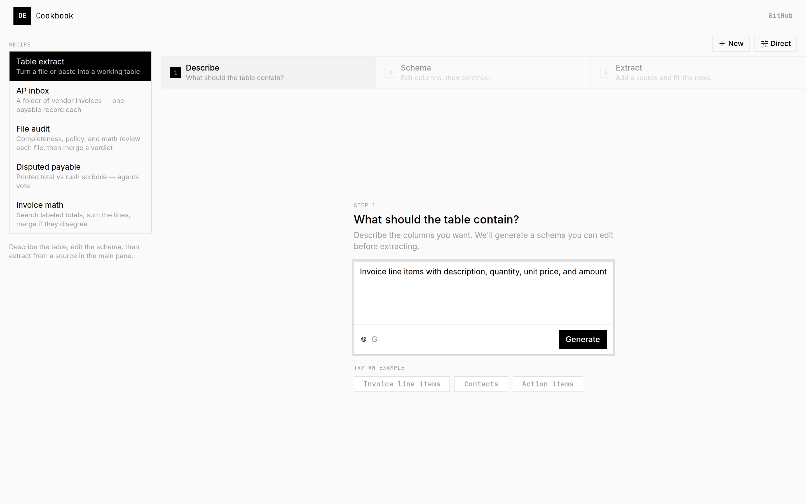
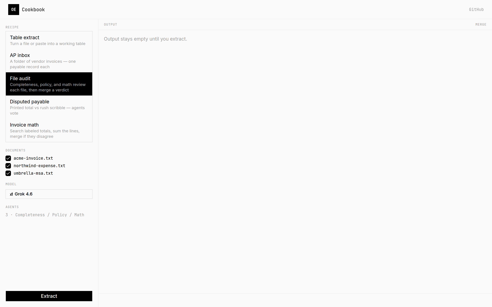

Structured Extraction
Typed output from any media.
Extract structured data from documents, images, audio, and video using LLMs and Zod schemas.
$ npm install openextract zod
$ npx openextract report.pdf \
--schema ./schemas.ts:Invoice \
--model xai/grok-4.6
{ "total": 1240.00, "currency": "USD", ... }Zero Config
One function call. Bring a schema, a path or URL, and an AI Gateway model id.
Multi-Media
Documents, images, audio, and video from paths, URLs, bytes, or streams.
Any LLM
Models go through the Vercel AI SDK and AI Gateway. No per-provider extras.
Type Safe
Zod schemas return validated, typed objects — not a raw string.
How it works
Schema in, typed data out
Define a z.object, call extract(), get validated output.
Define a schema
Describe the shape you want with a Zod object.
Point at any media
Documents, images, audio, or video via path or URL.
Get typed output
Validated against your schema. No parsing, no regex.
import { z } from "zod";
import { extract } from "openextract";
const Report = z.object({
title: z.string(),
findings: z.array(z.string()),
severity: z.number(),
});
const result = await extract(
Report,
"xai/grok-4.6",
"https://example.com/report.pdf",
{ instructions: "Extract findings" },
);Surfaces
Same pipeline, every interface
Library
extract, sessions, batch, swarms, and eve-shaped defineAgent. Styles: direct, search, code.
import { extract } from "openextract";CLI & TUI
One-shot extraction, an OpenTUI app, or cookbook recipes (npm run cookbook).
npx openextract --tui ./reports/q4.pdfMCP
stdio or Streamable HTTP. Tools cover extract, batch, swarm, sessions, and importable agents.
npx openextract-mcpCookbook UI
Local Next.js app: table extract, AP inbox, file audit, disputed payable, and invoice math.
npm run webWhat’s new
v0.2.0


Cookbook UI, importable agents, and durable extraction
The local web UI is a cookbook of AP and audit recipes. defineAgent / defineRemoteAgent follow the eve pattern with outputSchema and subagents/. extractSwarm reduces with merge, vote, or first. openextract/workflow wraps extraction as retryable Vercel Workflows.
Works with any media
PDF, DOCX, PNG, JPG, MP3, MP4, and 20+ formats